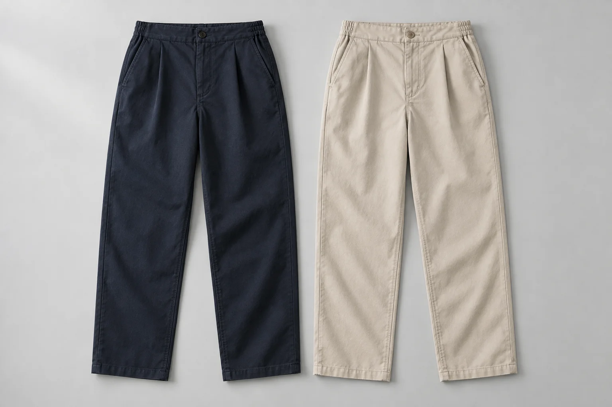

An everyday line
Loop Trouser
€98.00
An easy line from the first coffee to the last train. Loop combines a clean front with a little flexibility at the back of the waist.
- Sizes
- XS / S / M / L
- Fabric
- 100% cotton twill · nominal 230gsm
- Shape
- A relaxed straight cut. Start with the flat, unstretched waistband of a comfortable trouser, then compare the inseam and hip width in the complete table.
Illustrative EUR item price, equal across colours and sizes. No live stock, tax or shipping calculation, or real checkout.
The piece, up close
A clean front.
An easier waist.
The straight leg falls from one modest front pleat on each side. A plain front waistband and concealed zip keep the silhouette quiet; a discreet elastic section sits at the back. Side pockets take care of the small things.
How it is put together
Button and concealed zip fly; slanted side pockets; elastic back waistband; straight leg. No drawcord, cargo pockets or adjustable hem.
The extended waistband value is an illustrative garment measurement, not a recommended fit or pressure range. Alterations and made-to-measure sizing are outside this collection.
Fit before size
Read the measurements.
Fasten a similar trouser, lay it flat and measure the waistband from side to side without pulling. This is a garment width, not a waist circumference or body measurement.
| Size | Relaxed waist | Extended waist | Inseam | Flat hip |
|---|---|---|---|---|
| XS | 32 | 40 | 70 | 50 |
| S | 35 | 43 | 71 | 53 |
| M | 38 | 46 | 72 | 56 |
| L | 41 | 49 | 73 | 59 |
Nominal concept garment dimensions, not body measurements. The drawing is illustrative; it is not a cutting pattern or fit guarantee.
Compare with your garmentDownload the garment notes
Keep it in the rotation
Care is part
of the choice.
Fasten the fly, turn inside out and wash with similar colours on the intended gentle 30°C cycle. Reshape the waistband and air dry. Do not tumble dry or bleach. Follow the physical garment label when available.
The construction and care values describe this fictional design. No tested shrinkage, certification or guaranteed repair programme is claimed.
Read fit and care notesPut it together
Part of a small wardrobe.
Try Putty with Field in Lilac, or Ink with the Clay overshirt.
See the other pieces